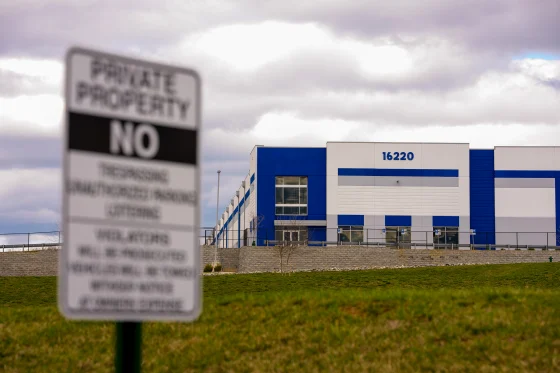
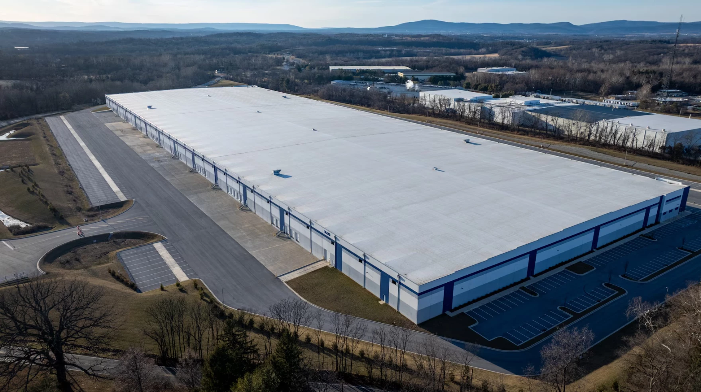
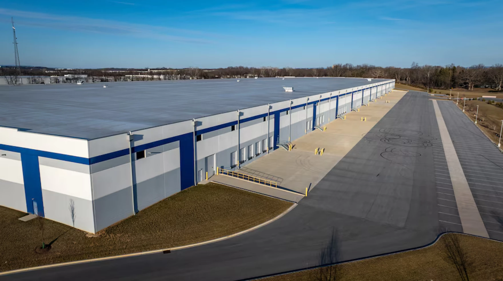

By Ashna Balroop
April 30, 2026
University of Maryland community members are feeling unsurprised and disappointed about Immigration and Customs Enforcement’s proposed detention center facility in Hagerstown, Maryland.
The Department of Homeland Security bought a Hagerstown warehouse in January with plans to turn it into an ICE detention center. The property can accommodate as many as 1,000 detainees, and it would be the only one in Maryland. A federal judge ordered April 15 for DHS to stop construction on the Hagerstown facility, only allowing limited work, such as fencing and repairs.
“I wasn’t surprised that they proposed building a detention center in Maryland, because ICE just got an influx of money from the federal government. It’s [the] current campaign, carrying out the mandates of the current president,” said Perla Guerrero, an associate professor of American studies and the director of the U.S. Latina/o Studies Program.

Guerrero said that in comparison to previous presidents, President Donald Trump seems to care less about people who are good community members, parents and those who pay taxes. Prior presidents would not traditionally detain these people, according to Guerrero.
“What is new about what he’s doing is pushing the margins on who can be persecuted, who can be detained, who can be removed,” Guerrero said.
Parra Torres, who is also a member of this university’s Young Democratic Socialists of America club, said that immigration enforcement under the second Trump administration is a lot harsher because of the rolling back of protections.
“There are other ways that situations regarding immigration status can be handled instead of using a militarized police force to terrorize communities and to report families,” Parra Torres said.
Guerrero also said that nothing about what Trump is doing is necessarily new, and that she believes former President Barack Obama might still have a higher number of ICE deportations than Trump.
It’s not immediately clear that Obama deported more than Trump. According to a DW article, Obama’s administration deported 3.1 million people across his two terms in office. Trump deported 932,000 people during his first administration. It’s not possible to calculate the number of people deported so far during his second term because the administration stopped updating federal dashboards.
Guerrero said that she knows students on campus whose lives ICE’s impact has directly affected, causing the usage of informal networks to report sightings of the agency. She said that she even knows some immigrants, who are citizens, that have started carrying their passports or copies in case they are stopped.
Parra Torres said that a lot of students, herself included, are feeling unsafe with the lack of clarity surrounding ICE and the possibility of the agency’s presence on campus.
She said YDSA is currently pushing for this university’s President Darryll Pines and the administration to declare UMD a sanctuary campus. This means practicing non-compliance with immigration enforcement agencies to the “greatest possible extent,” according to the organization’s Action Network petition.
YDSA held a rally on March 10 as part of their sanctuary campus campaign. Photo credit: Stella Henretta/SBS.
“We’ve sent hundreds of letters,” Parra Torres said. “I believe over 3,000 signatures on our sanctuary campus campaign petition. We’ve taken action.”
Some of YDSA’s demands include alerting students when ICE is on campus and directing the UMPD to refuse to sign agreements with the federal government that would permit the department to carry out immigration enforcement activities.
“The students, faculty, staff are all a community, but we’re part of a larger community. We’re part of PG County, we’re part of Maryland, and so the university has a lot of power in the area,” Parra Torres said. “Their inaction to make a statement about it, or their lack of acknowledgement of those [detention] centers as well as their lack of acknowledgement towards the need for a sanctuary campus at UMD is very alarming.”

DHS purchased the detention center from a private entity for $102.4 million. Photo credit: Jerry Jackson/The Baltimore Banner.

The facility is 825,000 square feet. Photo credit: Jerry Jackson/The Baltimore Banner.
This video demonstrates some Hagerstown residents' feelings towards the proposed detention center.